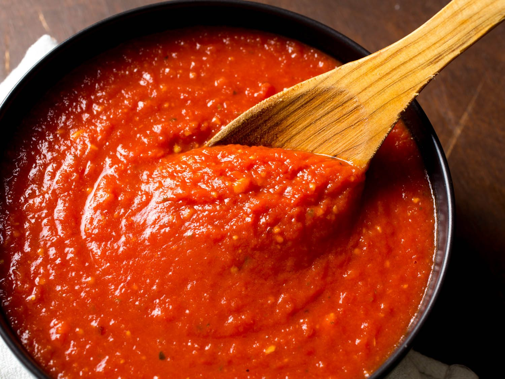

Tomato Sauce

Description
Perfect for pasta, lasagna, eggplant parmesan, or any other tomato sauce need, this simple recipe can be adjusted as needed. I've added ground meat, sausage, cheese, and other vegetables to this sauce to have it match my needs. Most of the time involved in cooking this involves allowing it to simmer, so it doesn't take too long to prepeare this either. Adding the greated carrot allows some sweetness to come through without needing to add sugar or cream.
Ingredients
- 1 can whole peeled tomatoes (unsalted if possible)
- 1/2 - 1 small yellow onion (chopped)
- 1/2 carrot (finely grated)
- 2-3 cloves of garlic (minced)
- 1 tbsp fresh thyme leaves (minced)
- 1 tbsp olive oil
- 1 tsp tomato paste
- Salt and pepper to taste
Steps
- Heat a sauce pan and add olive oil when hot.
- Add chopped onions and grated carrots. Cook for 5 minutes, stirring occasionally.
- Add garlic and thyme. Cook another 2 minutes, stirring occasionally.
- Add the can of tomatoes including the sauce. Crush the tomatoes in the pan using a potatoe masher or wooden utensil.
- Once the tomatoes are broken up, add the tomato paste, salt, and pepper. Bring sauce to a light simmer. Allow sauce to simmer for 20-30 minutes.
- While simmering and close to finishing, taste the sauce and add salt/pepper as needed.
Back to recipes